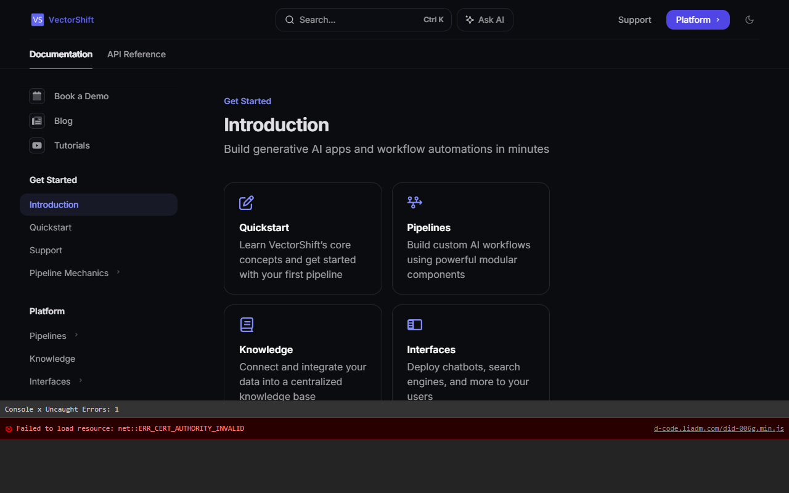

VectorShift Technical Assessment - Bug Report
Note: Automated account creation was restricted by Cloudflare CAPTCHA protections. The following bugs were identified on the public-facing platform and related documentation sites.
Bug 1: Broken Signup Direct Route (404 Error)
Steps to Reproduce:
- Open a browser.
- Navigate directly to
https://vectorshift.ai/signup.
Actual Behavior: The page loads a "Page Not Found | Framer" error, indicating the route is not configured on the main domain's CMS (Framer).
Expected Behavior: The URL should either host the signup form or seamlessly redirect the user to the application's actual registration page (e.g., https://app.vectorshift.ai/signup).
Bug 2: Incorrect Blog Link Routing in Footer
Steps to Reproduce:
- Go to the homepage at
https://vectorshift.ai/.
- Scroll to the bottom of the page to the footer section.
- Click on the "Blog" link.
Actual Behavior: The link is configured to point to the current directory (./), which only causes the current page to refresh rather than navigating to the blog.
Expected Behavior: The link should successfully navigate to the VectorShift blog (e.g., /blog or a subdomain like blog.vectorshift.ai).
Bug 3: Insecure HTTP Documentation Link in Footer
Steps to Reproduce:
- Navigate to
https://vectorshift.ai/.
- Locate the "Docs" link in the footer.
- Observe the destination URL.
Actual Behavior: The link points to http://docs.vectorshift.ai/ instead of utilizing HTTPS.
Expected Behavior: For consistency in security and to avoid unnecessary browser warnings or mixed-content risks, all internal routing and subdomains should explicitly use the HTTPS protocol.
Screenshot (Included above):
Please refer to the screenshot in Bug 2, highlighting the orange box on the Docs link.
Bug 4: Certificate Error for Third-Party Script
Steps to Reproduce:
- Navigate to the documentation site at
https://docs.vectorshift.ai/.
- Open the Browser Developer Tools and view the Console.
Actual Behavior: A console error is present: Failed to load resource: net::ERR_CERT_AUTHORITY_INVALID for the resource https://d-code.liadm.com/did-006g.min.js.
Expected Behavior: All integrated third-party scripts should load successfully without certificate or security errors to maintain a secure and error-free console environment.
Screenshot (Console Output intercepted):
